Streamlining Your Content Strategy: Lessons Learned from Ali Abdaal
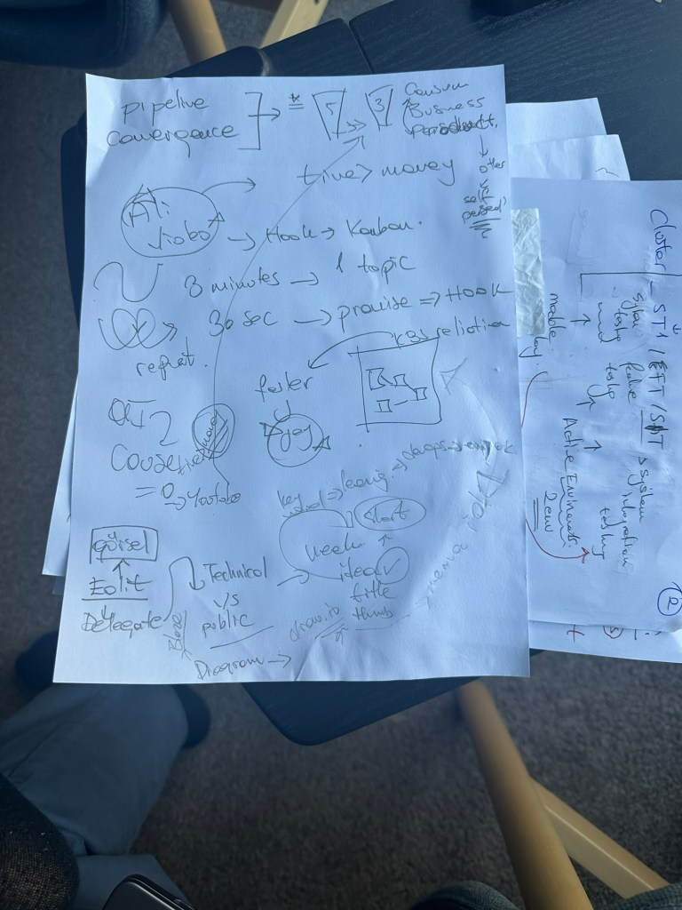
In today’s fast-paced digital world, simplifying processes and delivering value efficiently is essential. Recently, I’ve been refining my content strategy, drawing inspiration from Ali Abdaal’s approach. By trimming down my pipeline from five stages to three, I’m aligning my efforts more directly with my audience’s needs and ensuring that my message resonates clearly. Here’s what I’ve learned and how I’m applying it.
GPT lowered the cost of a course to zero > publish them without pay wall and build trust on Youtube
The Three Stages: Consumers, Business, Product ( instead of 5 )
I’ve restructured my pipeline to focus on three core stages:
- Consumers (Top of the Pipeline): Building trust is crucial. Consumers are overwhelmed with choices, so I’m focusing on valuing their time more than money. I’m providing content that’s clear, concise, and actionable. Trust-building is the foundation here – they need to believe that I respect their time and that what I’m offering is worth it.
AI shifted the action so time is more valuable than the money so make courses like Nana on the Youtube and delivery the top value to gain trust
Rifat shares what he learns during that week.
-
Business (Middle of the Pipeline): This stage is about creating connections. I’m primarily leveraging LinkedIn to foster these relationships. Networking is key, and by offering valuable insights and engaging content, I can connect with professionals who may eventually convert into clients or collaborators. Reach the community and the tech vendors where you learn.
-
Product (Bottom of the Pipeline): At the bottom is where I sell. Whether it’s a service, consultancy, or a product, this is where the consumer’s trust and my connections culminate in a business transaction. By this stage, I’ve already established credibility and rapport, making the pitch smoother and more authentic.
Hooking the Audience: The 30-Second Premise / Promise
Ali emphasizes the importance of a solid hook, and I’ve incorporated this by ensuring that I can capture attention in the first 30 seconds. People decide quickly whether to engage or scroll past, so the hook needs to clearly present the premise and offer immediate value. For example, in videos, I make sure the hook sets the tone and piques curiosity, compelling viewers to stick around.
Added Hook To Instance > on my one note!
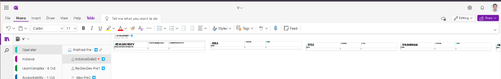
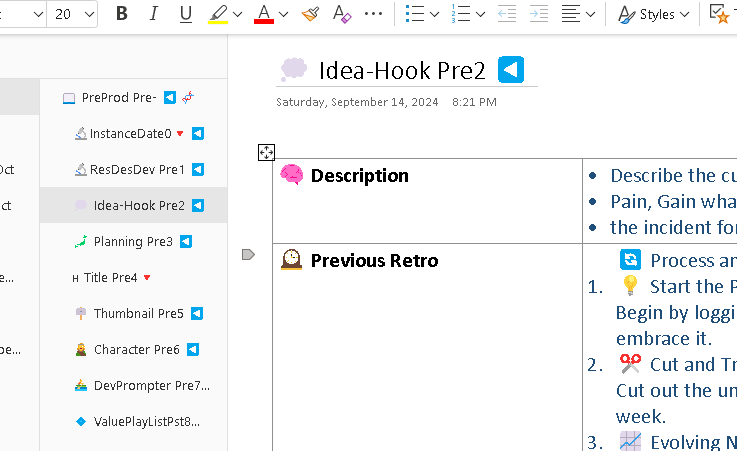
Delivering Content in Bites: One Topic Every Three Minutes
Attention spans are short, and information overload is real. To address this, I focus on delivering one clear topic every three minutes. This ensures that viewers don’t feel overwhelmed and can absorb the content more effectively. I break down complex subjects into digestible chunks, giving each idea the space it needs to sink in before moving on to the next.
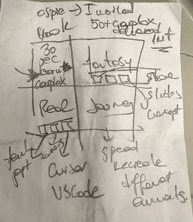
Single Key word : LEARNING
It is my main point and lines up with my unfair advantage. Aspie leveraging technology to close my skills gaps.
Tech - Content Strategy to Learning
After
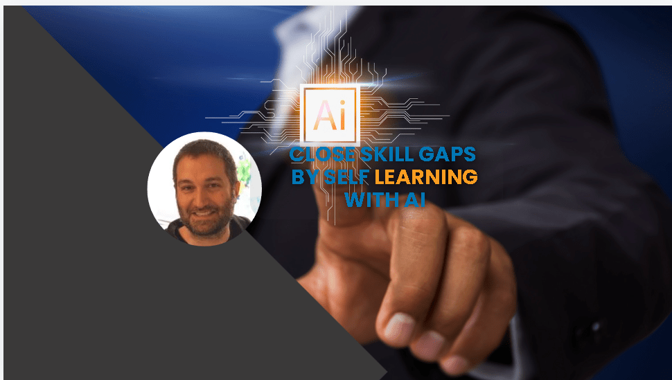
Before
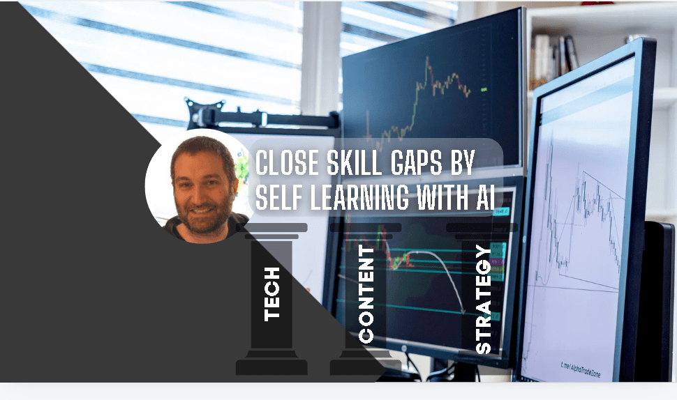
Weekly Storyboards: Consistency and Clarity
To maintain consistency, I’ve adopted a storyboard structure with four key segments for each week:
-
The hook (introducing the promise / premise )
-
Topic 1 (delivered clearly) ( flex inside with unfair advantage )
-
Topic 2 (following the same structure on reach climax do )
-
Topic 3 (closing the content loop why watch the next video )
This storyboard approach ensures I’m prepared and can deliver high-quality content regularly, without falling into the trap of overcomplicating things.
Added to DevPrompter Part
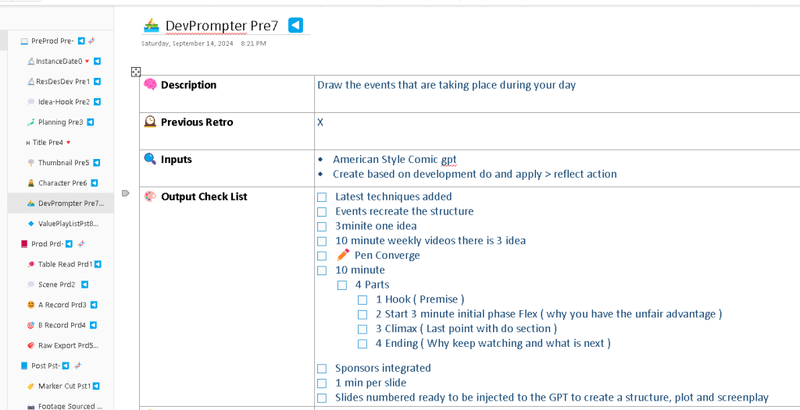
Hands-On and Delegation on Editting
I’m also focusing on improving my hands-on skills before considering delegation. By mastering the core tasks myself, I’ll have a better understanding of the processes, making it easier to articulate my ideas and delegate effectively. Once I reach this point, I can create diagrams and articulate the workflow through tools like GPT to delegate tasks efficiently and keep the machine running smoothly.
Conclusion on Value
Am I doing this for my self or for the **other **
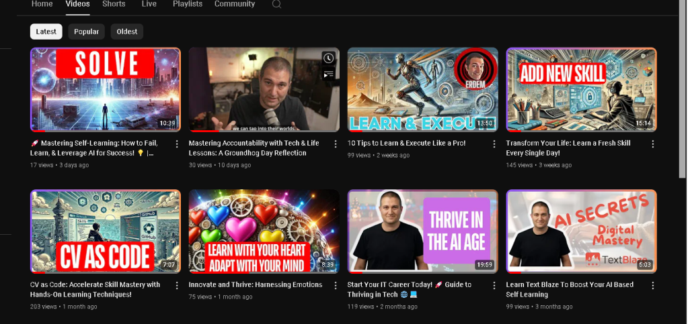
Self only learning for my self >>> with divergence
Other >>> show them how to add to their CV in a converged way
I am converting the weeks on what i learned and converge it and have a retro for the week while helping other on what i learned and how they can use it in their life like a guide not a mentor by being transparent and explaining why it is important and how i learn in the process.
By simplifying my pipeline, refining my content delivery, and focusing on the essentials, I’m aligning my strategy with what really matters: delivering value. These insights from Ali Abdaal are helping me streamline my approach, build trust with my audience, and scale my efforts more effectively. If you’re looking to level up your content strategy, I highly recommend starting with a similar approach—simplify, focus, and deliver consistently.
This streamlined approach has already started making a difference in my workflow, and I’m excited to see how it evolves as I refine it further.
Also have the mindset on that we need to converge and diverge at all times
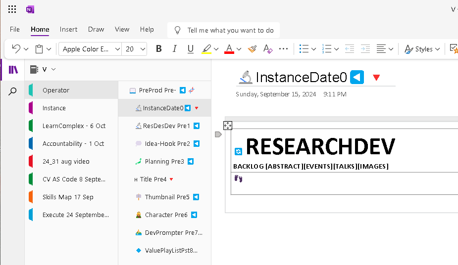
Operator Title update >>> ass things others are interested in not only wha you are interested in >>> own learning but focus on CV
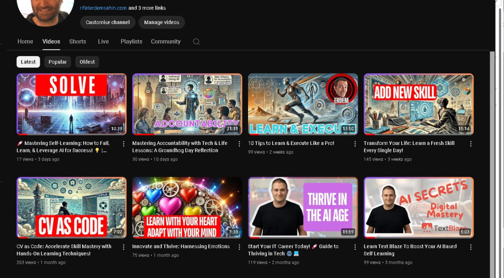
Udemy and the Youtube Needs to be merged to make sense >>> help others with the courses on Youtube
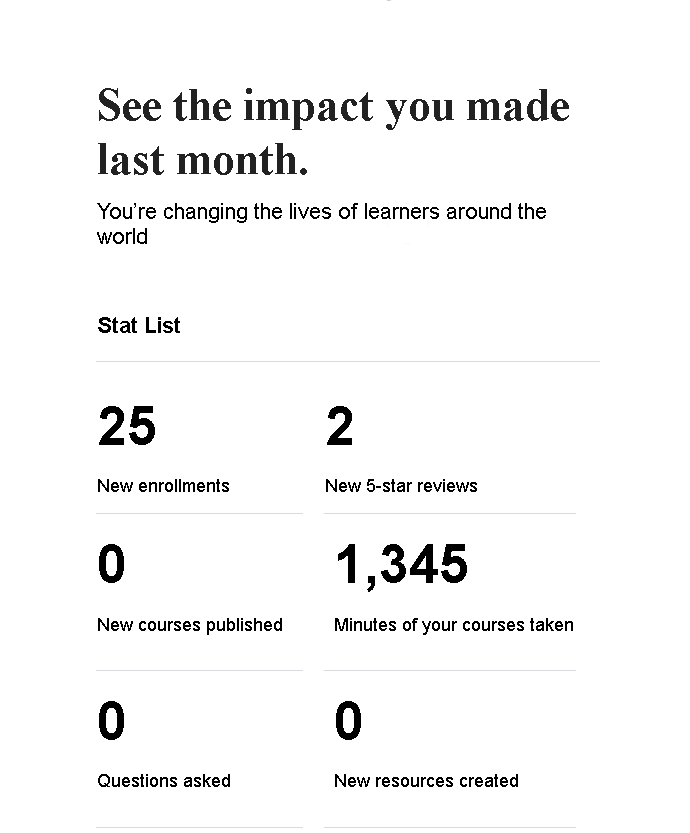
Imported from rifaterdemsahin.com · 2024